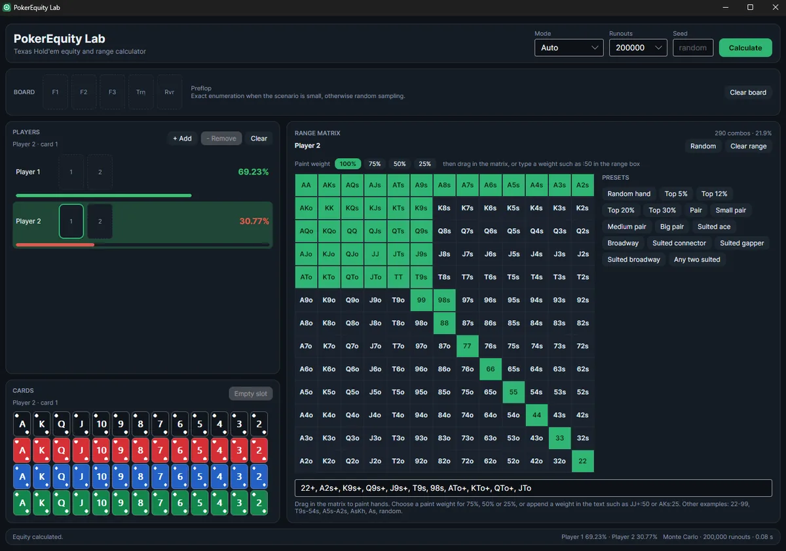

SOFTWARE LAB
Open-source solutions alongside industry-standard software.
100% FREE OPEN-SOURCE

Poker Notes
Portable Player Notes & Optional OCR Hover Boxes
A fast, self-contained Windows notes app for poker. Write reads with autosave, organise players with colour-coded tags, aliases and note history, export to CSV, and optionally let it read the seat names off your tables and show your notes in click-through hover boxes. No installer, no runtime, no background scanning, zero client memory injection - 100% local JSON.

PokerEquity Lab
Equity & Ranges, in Plain Numbers
A free Windows program that shows how often each hand wins. Compare two to ten players, draw their ranges on a 13x13 grid, add a flop, turn or river and press Calculate: you get equity plus win, tie and lose percentages, and the current hand written out in words. Unzip and run — no installation, no account and no internet connection needed.
PokerLab RNG
Roll the Number for Your Mixed Frequencies
A small Windows program that rolls a random number from 1 to 100. Set how often you want to bet or raise (25, 33, 50 or 75 %, or any value on the slider) and press ROLL RNG, the space bar or the number card: the program answers in plain words — BET / RAISE in green when the roll is inside your frequency, CHECK / FOLD when it is above it. There is a Hover mode that rolls once every time the mouse passes over the card, auto-roll every 1 or 2 seconds, the last six rolls with a running average, and a short beep you can mute. Unzip and run: no installation, no account, no internet connection, and nothing is saved to disk. It is a plain random number generator for mixed frequencies — not a tracker or a HUD.
PREMIUM & FREEMIUM

GTO Wizard
Poker Software for Studying Spots
The leading cloud-based solver. Free features include 100% free preflop solutions/charts and daily practice hands. Premium subscriptions unlock full postflop spot analysis and custom hand uploads.
VISIT SITE
Jurojin Poker
Window Manager & Layout Tools
Essential tool for multi-tablers. Free features include full functionality for microstakes players (e.g. NL2/NL5), custom hotkeys, pot-size overlays, and automatic table tiling.
VISIT SITE
Hand2Note (H2N)
Next-Gen Dynamic Tracking
Incredibly fast tracking software designed for mass data analysis. Offers a fully functional free version for static HUDs, while paid licenses unlock positional and dynamic HUDs.
VISIT SITE
PokerTracker 4 (PT4)
The Classic Industry Standard
Imports hand histories, displays real-time HUD stats on opponents, and offers deep analytical filters to find leaks in your game. Requires a one-time license purchase (with a free trial available).
VISIT SITE
Hold'em Manager 3 (HM3)
Visual Analysis & Game Tracking
Features a highly graphical user interface, situational pop-ups for HUDs, and extensive post-session visual reports to monitor your winrate and variance. Offers a free 14-day trial.
VISIT SITE